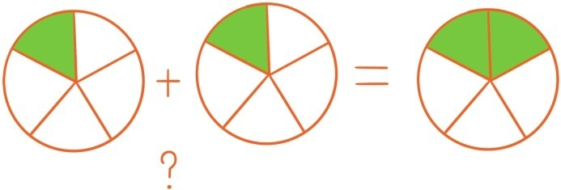
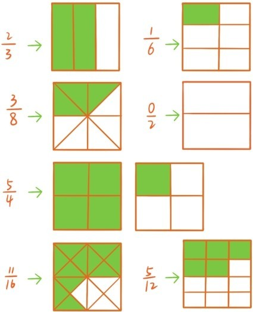
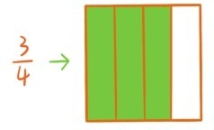
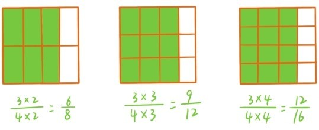
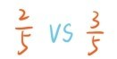
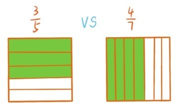
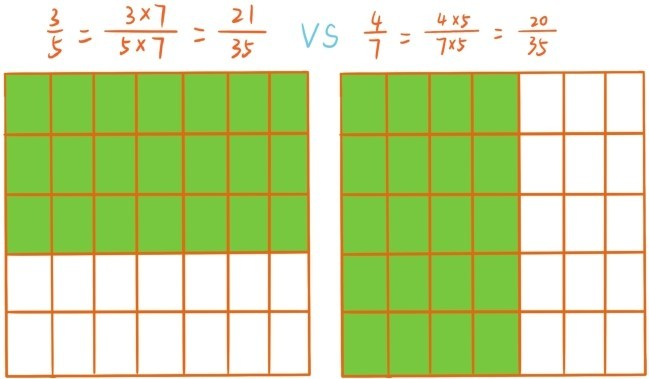
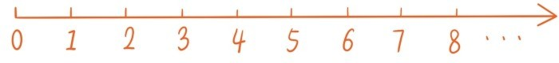
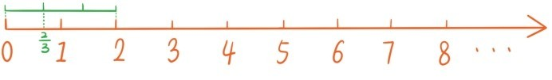
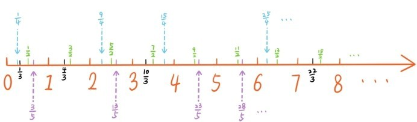

——引入分数
至少在4000多年前，人类就已经开始使用分数了。那个时代的人之所以引入分数，很重要的一个目的就是为了能平均分配物资。之前讲过，除法实质上就是平均分，但是大部分时候，做除法或平均分会出现余数。把17块巧克力平均分给5位小朋友，每个小朋友分到3块巧克力后，还余下2块巧克力，写成除式就是
17÷5=3…………2（余数）
但是剩下这2块巧克力如果不能平均分，小朋友会不会吵架？谁不想多得一块巧克力呀！所以余数这个东西是很讨厌的。为了消除余数，为了做到真正的平均分，我们就要用小刀把剩下的这2块巧克力平均切成5份，这时每份是多少呢？我们可以引入分数 表示把2块圆形巧克力平均分成5份后每份的量。

分数的一般形式是一根短横线，加上横线上下两个自然数，这两个数分别称为分数的分子和分母。下面是更多的分数例子以及它们所表示的量（大的正方形表示1）。

注意，分数的分母不能为0，这和0不能作为除数的原因是一样的。
既然现在引入了分数，那之前的自然数0，1，2，3，4……该怎么处置呢？只需注意到这样一个简单的事实，那就是将一个自然数，比如4，平均分成1份，每份还是4，这个数并没有被分开，也没有改变。写成等式就是。因此自然数实质上就是特殊的分数，，……所以，引入分数并没有将原先的自然数驱逐出数的家园，而是将自然数扩充为分数。
比起自然数，分数还有一个特点，那就是同一个分数常常会伪装成不同的样子，比如下图阴影部分表示的是分数 。

如果沿着水平方向把上面这个正方形做2等分，3等分，4等分，……这时阴影部分表示的分数就会变成

但是注意，在这里阴影部分所表示的量并没有任何变化，只是被划分得更细了。所以这些分数都是相等的，它们所表示的实际上是同一个数。
就好比一个爱打扮的小姑娘，每天都穿完全不一样的衣服，叫人认不出来。上面这个等式引出了分数表达的一个基本法则：
一个分数的分母分子同时乘以或除以同一个不为零的数，分数本身并没有改变。
如何比较分数大小呢？先考虑一个简单的例子

这两个数的大小关系是不难判断的，把1平均分成5份，其中3份的量自然会大于2份的量。同样的道理，两个分数如果分母相同，比较大小时只需比较它们的分子大小即可。但是，如果碰到分母不相同的两个分数怎么办，比如

即使看图也不好看出来谁大谁小。一种巧妙的方法是让它们“伪装”成分母相同的分数。

这时候大小一眼就能看出来了。这种将几个分数“伪装”成分母相同的形式的做法，称为通分。在下一节讲分数运算时，通分的操作将大显身手。与通分相反的操作是约分——将分子分母同时除以一个不为零和1的自然数后，分子分母都变小了，但分数本身还是不变的，例如。不能约分的分数称为既约分数，例如。每个分数都可以通过不断约分转化为既约分数，例如。
还有一种形象的方式可以展示出所有分数的大小，那就是把每一个分数都安置在数轴上。

作为特殊的分数，自然数已经排在数轴上了，而且每个自然数的位置到原点的距离恰好等于这个数本身。现在把分数都安置在数轴上，我们也想遵循这个原则。比如，安置 时，先从左边截出长度为2的线段，然后将它3等分， 就安置在第1个等分点。

如果把所有分数都安置进去，我们就会发现左边的分数总是小于右边的分数，而且整条数轴变得十分热闹拥挤，简直就是密密麻麻！

提问时间
1.6.1 比较 和 的大小，再比较它们与的大小。
1.6.2 数轴上3个点和，哪个点位于最左边，哪个点位于中间，哪个点位于最右边？
1.6.3 将和化为既约分数。